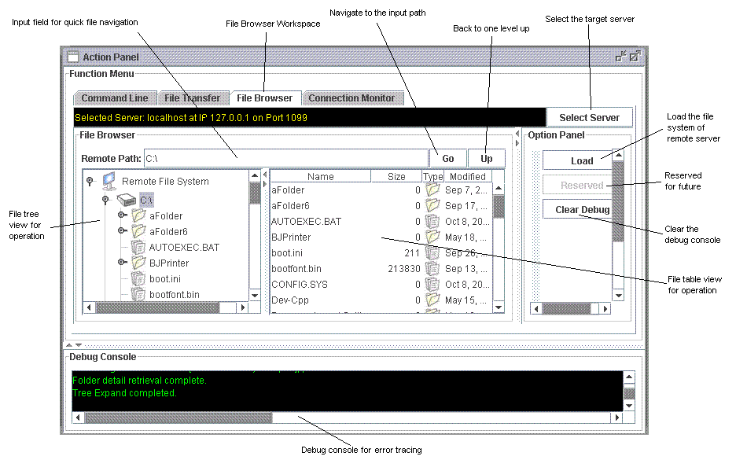
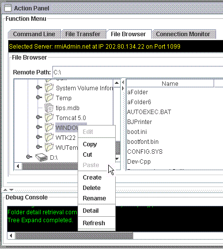
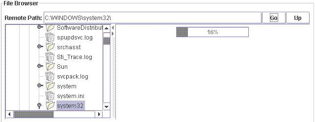
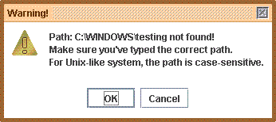
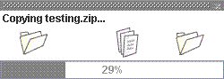
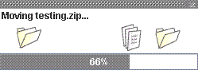
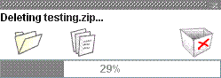
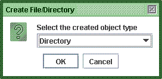
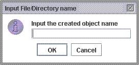
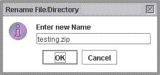

For example, when you want to move a file from one place to another on several remote machines, you could simply do this in just one interface of RMIAdmin, regardless of the target computer platform.
For example when you want to operate files from a Windows computer to another Windows computer, you must either use FTP or map the remote network drives (which must be shared initially).
The same applied to unix-like computer, you have to start the NFS / FTP / Samba service before you could really connect with these remote file system, which is therefore raising a great deal management issue such as specific settings, as well as security concern. While RMIAdmin keeps you away from this burden by means of the RMIServer program in which configurations is guaranteed to be consistent even across various computer platforms.
The usage of RMIAdmin File Browser is fairly easy and much alike to Windows Explorer.
-
Select "Tools" -> "File Browser", this will brings you to the File Browser Workspace.
 - Choose your target server to operate by clicking the "Select Server" button.
-
All the managed server will be loaded into a list box, simply choose your preferred
server, and click "OK" to continue.

-
As shown above, the File Browser Workspace is divided into 2 views:
- the File Tree View on the left side
- the File Table View on the right side
-
Where you could actually perform operations listed below across these 2
different views.
- Copy and Paste
- Cut and Paste
- Delete
- Create
- Rename
- Edit
- View Property
Quick Navigation
-
Type your target destination on the "Remote Path" input field.
- When completed, click "Go" to proceed navigation. 
- If you want to immediately go one-level up of the existing path, simply click the "Up" button.
-
If you input an invalid path that does not exist, there will be a
warning message.

* Note that the file path entered is non-case sensitive for Windows, but case sensitive for all unix-like system.
Copy and Paste
- Select any folder or file from the File Tree View or File Table View.
- Right click on it and select Copy.
- Goto the target location, then right click on it and select Paste.
-
A progress monitor will then be shown, indicating the amount of completion,
simply wait until completion.

* Note that you can select more than one objects from the File Table view, but not the File Tree View.
Cut and Paste
- Select any folder or file from the File Tree View or File Table View.
- Right click on it and select Cut.
- Goto the target location, then right click on it and select Paste.
-
A progress monitor will then be shown, indicating the amount of completion,
simply wait until completion.

* Note that you can select more than one objects from the File Table view, but not the File Tree View.
Delete
- Select any folder or file from the File Tree View or File Table View.
- Right click on it and select Delete.
-
A warning message will be prompted, seeking your confirmation.
Press "OK" to proceed or press "Cancel" to abort. -
A progress monitor will then be shown, indicating the amount of completion,
simply wait until completion.

* Note that you can select more than one objects from the File Table view, but not the File Tree View.
Create
- Select the location where you would like to create the new object.
- Right click on it and select Create.
-
A selection box will be prompted, simply select the creation type.
e.g. Folder or File

then press "OK" to continue or "Cancel" to abort. -
If you click "OK" above, you will then required to enter the name
of the new object.

Press "OK" to continue or "Cancel" to abort.
* Note that you can only select one object either from the File Table View or the File Tree View.
Rename
- Select any folder or file from the File Tree View or File Table View.
- Right click on it and select Rename.
-
An input box will be prompted, simply enter the new name of the selected object.

Press "OK" to continue or "Cancel" to abort.
Refresh
- Select any folder from the File Tree View or File Table View.
- Right click on it and select Refresh. This will refresh all the objects under the selected location.
Edit File
- Select a file from the File Tree View or File Table View.
- Right click on it and select Edit.
- The file editor of RMIAdmin will then be invoked, click HERE for its usage
Related Topics:
|
|
Copyright 2005 © RMIAdmin. All rights reserved. |